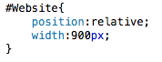

Web Site Design & Construction
Positioning Elements
Now we have our text all nice and pretty (well, mine is, I don't know what yours is like) we should probably look at positioning our elements and making our site look vaguely respectable. The first thing we'll look at is changing some of the size attributes of our divisions. Then we will use the position attribute to change how each division is positioned. This can be a tricky concept to understand, so I will link out to the W3 Schools page again, as they explain it perfectly. Then on the next page we'll be adding some colour, and maybe background images, to our content. After that we'll talk about margins and padding. Then I'll go over borders and that should be us done with CSS, but we'll see how things go.
Changing Sizes
There are two elements to the size of our objects, height and width, one of these (height) should always be flexible unless you have a good reason for restricting it. The other can be absolute or variable based on preference. I like to make the width of my pages absolute so that the style stays the same regardless of the size of the window. So for our tutorial I'm going to make the width of my outer division 900 pixels. This is wide enough for most modern screens, but not too wide for some older ones. You change the width like so:
My absolute width.
I'm also going to change the width at a later point, post-positioning, so that they fit in with the design we are building. For now we should position our elements.
Positioning
Positioning can be awkward, especially when you start fiddling with things like floats and absolute/relative positioning, but it should be simple for what we want to do. The first thing we want to do is make our outer division relative to the browser window. This is done like so:
The ID Website is now positioned relatively. 
At the moment, this has changed nothing about the page, but it will. We should change all interior divisions (except content) so that they are absolute. This means that they will be positioned to the pixel based on their parent container (our Website division). For the moment, this will make your site look a mess, but keep with me. Absolute positioning is done like so:
Now our divs are absolutely positioned. This will mess up your site now.
With our divisions positioned absolutely we can now go about the task of moving them. This is done using the attributes top, bottom, left and right. Our title division wants to be at the top. Right at the very top. So we should assign it the attribute top:0;. We also want it to be the whole width of the page so I'm going to go ahead and make width equal 100%. We want our navigation to be on the left, but also be the same height as our main page, so we should make its top, bottom and left attributes all 0, alternatively we could change its height attribute to be 100%, but there is a reason why this is inadvisable, which we will touch on later. This will force the division to remain the same height as our Website container. I'm also going to make the width of this division equal to 250 pixels. The content we can probably leave as is. For now.
Positioning seems so simple doesn't it?

That's our elements positioned. Or at least it should be. I'm a little hazy when it comes to positioning elements. I think I've done it right, but we'll see when we get there. The next page will add some more colour, and a background image, to our content, and you'll hopefully see why I said your web page will have been messed up by our positioning efforts.